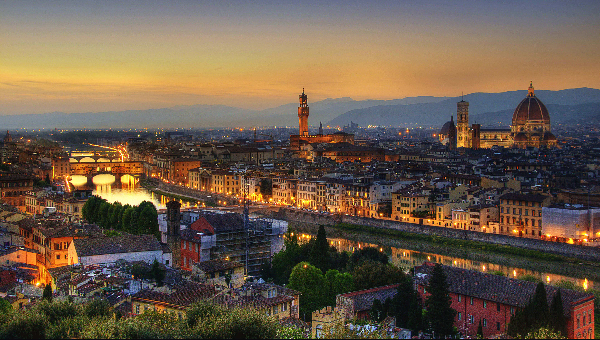

Jewel of the city

Florence is a city in central Italy and the capital city of the Tuscany region. It is the most populated city in Tuscany, with 383,084 inhabitants in 2013, and over 1,520,000 in its metropolitan area.
Florence was a centre of medieval European trade and finance and one of the wealthiest cities of that era. It is considered by many academics the birthplace of the Renaissance, and has been called "the Athens of the Middle Ages". Its turbulent political history includes periods of rule by the powerful Medici family and numerous religious and republican revolutions. From 1865 to 1871 the city served as the capital of the Kingdom of Italy (established in 1861). The Florentine dialect forms the base of Standard Italian and it became the language of culture throughout Italy due to the prestige of the masterpieces by Dante Alighieri, Petrarch, Giovanni Boccaccio, Niccolò Machiavelli and Francesco Guicciardini.
The city attracts millions of tourists each year, and UNESCO declared the Historic Centre of Florence a World Heritage Site in 1982. The city is noted for its culture, Renaissance art and architecture and monuments. The city also contains numerous museums and art galleries, such as the Uffizi Gallery and the Palazzo Pitti, and still exerts an influence in the fields of art, culture and politics. Due to Florence's artistic and architectural heritage, Forbes has ranked it as one of the most beautiful cities in the world.
Florence plays an important role in Italian fashion, and is ranked in the top 15 fashion capitals of the world by Global Language Monitor; furthermore, it is a major national economic centre, as well as a tourist and industrial hub. In 2008 the city had the 17th-highest average income in Italy.